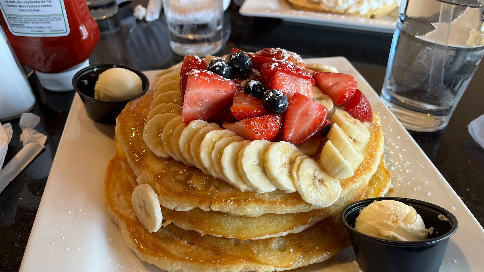

Ingredients:
- Butter - 2 tbsp (28g)
- Sugar - 2 tbsp (25g)
- Eggs - 1
- Vanilla - 2 tsp (5 ml)
- Milk - 1 3/4 cups (400 ml)
- Salt - 1 tsp (6g)
- Baking Powder - 1 heaped tbsp (16g)
- Flour - 1.5-2.5 cups (200-300g)
- Additional butter for the pan
Instructions:
- Melt the butter without overheating.
- Mix in sugar and beat in egg thoroughly
- Mix in the vanilla, milk, salt and baking powder.
- Start by mixing in a conservative amount of flour, adding more until you get the thickness you desire
- Make sure not to over-mix, small lumps in the batter are fine.
- Let the batter rest a few minutes before cooking.
- Heat up cooking surface to low-medium heat and add butter.
- As butter starts to brown, add pancakes 1/4 cup at a time.
- Flip pancakes when many bubbles appear on their surface.
- Continue cooking until desired doneness is achieved and place onto a cooling rack.
- Enjoy!
Back to Homepage